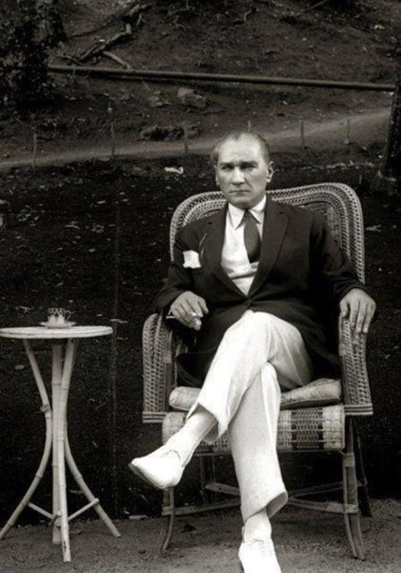
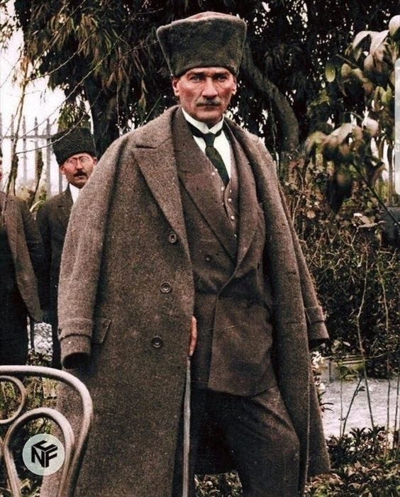

Ataturk's Life

Mustafa Kemal Atatürk was born in a three-storey pink house at Islahhane Street, Kocakasim District, Salonika in 1881. His father was Ali Riza Efendi and mother was Zübeyde Hanim. His paternal grand father Hafiz Efendi is a member of Kocacik Nomads from Konya and Aydin region, which was settled in Macedonia during 14th-15th centuries. His mother Zübeyde Hanim, also a daughter of an old Turkish family, settled in the town of Langasa near Salonika. Ali Riza Efendi who worked in various areas such as; a military officer, a pious foundation clerk and for some time a timber merchant and got married with Zübeyde Hanim in 1871. Four of Atatürk's five siblings died at an early age, only his sister Makbule Atadan survived and lived until 1956.
Little Mustafa commenced his education in Hafiz Mehmet Efendi's neighbourhood school, later he was transferred to Semsi Efendi School, because his father wished so (Comparatively modern education at the time.) During his primary education, he lost his father in 1888. For a while he stayed on his uncle's farm in Rapla, returned to Salonika and completed his primary education. He enrolled to Salonika Junior High School for Civil Servants. After a short time in 1893, he transferred to Military Junior High School. It is at this school his math teacher Mustafa Bey, added Kemal to his name in between 1896-1899, Mustafa Kemal finished Monastir Military Senior High School and commenced Military College in Istanbul. In 1902 he graduated with the rank of lieutenant and continued his education in Military Academy. In January 1905 he completed the Academy and graduated with the rank of a captain. His first appointment was in 5 Army in Damascus in between 1905-1907. He was promoted to adjutant major in 1907 and appointed to 3 Army in Monastery. He was the Chief of Staff of the Army Corps which entered Istanbul on 19 April 1909. He was sent to France in 1910 and took part in Picardie Manoeuvres. In 1911 he was back in Istanbul and started to work under the Command of General Staff.
Mustafa Kemal and a group of friends took part in Tobruk and Derna Fronts during the war which started in 1911 against the Italians who were attacking Tripoli (Libya). He won the Battle of Tobruk against the Italian forces on 22 December 1911. He was then appointed to Derna Front as the Commander-in-Chief on 6 March 1912. When the Balkan War started in October 1912, Mustafa Kemal joined the battle with units in Gelibolu (Gallipoli) and Bolayir. He greatly contributed to the retrieval of Edirne and Dimetoka (Dhidhimotikhon). In 1913 he was appointed to Sofia as the military attache. During his assignment in Sofia he was promoted to lieutenant-colonel. His duty as the military attache ended in January 1915. During his stay in Sofia, the First World War had started and the Ottoman Empire had become obliged to enter in this war. Mustafa Kemal was appointed to Tekirdag to organize the 19 Division. It is in the First World War, which started in 1914, that Mustafa Kemal wrote an heroic epic and made the legend of Dardanelles are Impassable against Entente troops in Gallipoli. On 18 March 1915, when British and French navies failed to break in through the Straits of Dardanelles with heavy losses, the decision to land troops on the Gallipoli peninsula had been given. Under the command of Mustafa Kemal, 19 Division halted the enemy forces, which landed in Ariburnu -now called Anzak Koyu (Anzac Cove)- on 25 April 1915 at Conkbayir. Mustafa Kemal was promoted to full colonel after this great success. British forces started attacking again from Ariburnu on 6-7 August 1915. Anafartalar Group Commander Mustafa Kemal won the victory of Battle of Anafartalar on 9-10 August. Following this, he also won the victories of Battle of Kirectepe on 17 August and Second Battle of Anafartalar on 21 August. The Turkish nation defended her honour in Gallipoli (Battle of Canakkale) against Entente States by losing approximately 253,000 of her sons to martyrdom. Mustafa Kemal's famous order to his soldiers "I do not order you to attack, I order you to die", had changed the destiny of this Front.

1916 after Gallipoli, Mustafa Kemal took duties in Edirne and in Diyarbakir. He was promoted to brigadier general in 1 April 1916. He took part in the battles against Russian forces by which Mus and Bitlis were liberated. After short duties in Damascus and Aleppo, he returned to Istanbul in 1917. He went to Germany with Heir Apparent Prince Vahdeddin Efendi for observations in the European Western Front. He became sick after this trip and received treatment in Vienna and Carlsbad. He returned to the Front on 15 August 1918 as the Commander-in-Chief of the 7 Army in Aleppo. At this front he achieved the most successful defensive battles in history against the British forces. He was appointed as the Commander-in-Chief of the Lightning Army Group on 31 October 1918, just one day after the signing of the truce in Moudros. After the abolishment of this Army Group he was appointed for a duty in the Ministry of War in Istanbul on 13 November 1918.After the beginning of the occupation of the country and demobilization of the Ottoman armies according to the Moudros Truce, Mustafa Kemal arrived in Samsun on 19 May 1919 as the Inspector General of the 9 Army. On 22 June 1919, he issued the Amasya Circular, declaring that the nation's determination and decision will restore the nation's independence and called for the gathering of Congress in Erzurum and Sivas. Between 23 July and 7 August 1919 delegates from all over the country gathered in Erzurum and then between 4 September and 11 September 1919 in Sivas, determining the path to follow in order to gain nation’s independence. On 27 December 1919 he was welcomed in Ankara with great enthusiasm. 23 April 1920, the first day of the Turkish Grand National Assembly, was one of the very important steps on the way to the founding of the Turkish Republic. Mustafa Kemal was elected as the first Speaker of the House and the Head of the Government. The Turkish Grand National Assembly started preparing and passing the new laws necessary for implementing the Independence War successfully.The Turkish Independence War was started when the first bullet was fired against the enemy during the occupation of Izmir by the Greek forces on 15 May 1919. Victors of the First World War, by signing of the Sevres Agreement, started the occupation of their shares of the Ottoman Empire. At the beginning, resistance against occupation forces started with militia forces, namely Kuva-i Milliye (National Forces). The Turkish Grand National Assembly established the regular army and successfully led the Independence War to victory by integrating the militia forces into the regular army.The important stages of the Independence War under the leadership of Mustafa Kemal were, Liberation of Sarikamis (20 September 1920), Kars (30 October 1920) and Gümrü (7 November 1920); Defences of Cukurova, Gaziantep, Sanliurfa and Kahraman Maras (1919-1920); Victory at the First Battle of Inönü (6-10 January 1920); Victory at the Second Battle of Inönü (23 March-1 April 1920); Victory at the Battle of Sakarya (23 August-13 September 1921); Great Offensive, Battle of Dumlupinar (Battle of Commander-in-Chief) and the Great (Final) Victory (26 August-9 September 1922).After the victory at the Battle of Sakarya, the Turkish Grand National Assembly promoted Mustafa Kemal to the rank of Field Marshal and granted him the title of Gazi-the Victorious Fighter. The Independence War was ended by the Lausanne Peace Treaty on 24 July 1923. Thus, all the impediments of the Sevres Agreement had been removed and integrity of the Turkish land had been accomplished by the signing of the Lausanne Agreement. There were no obstructions left on the way to establish the new Turkish State based on national solidarity.Founding of the Turkish Republic had been heralded by the opening of the Turkish Grand National Assembly on 23 April 1920. National Assembly's successful administration during the Independence War had secured the founding of the new Turkish State. Caliphate and Sultanate (monarchy) separated and Sultanate was abolished on 1 November 1922. Therefore, the administrative ties with the Ottoman Empire were broken. The declaration of Republic was made on 29 October 1923 and Mustafa Kemal was unanimously elected as the first President of the Republic. Ismet Inönü formed the first government of the Republic on 30 October 1923. Sovereignty unconditionally belongs to Nation and Peace at home, peace in the world are the raising fundamentals of the Turkish Republic.Atatürk made many reforms in order to bring Türkiye to the level of contemporary civilizations.